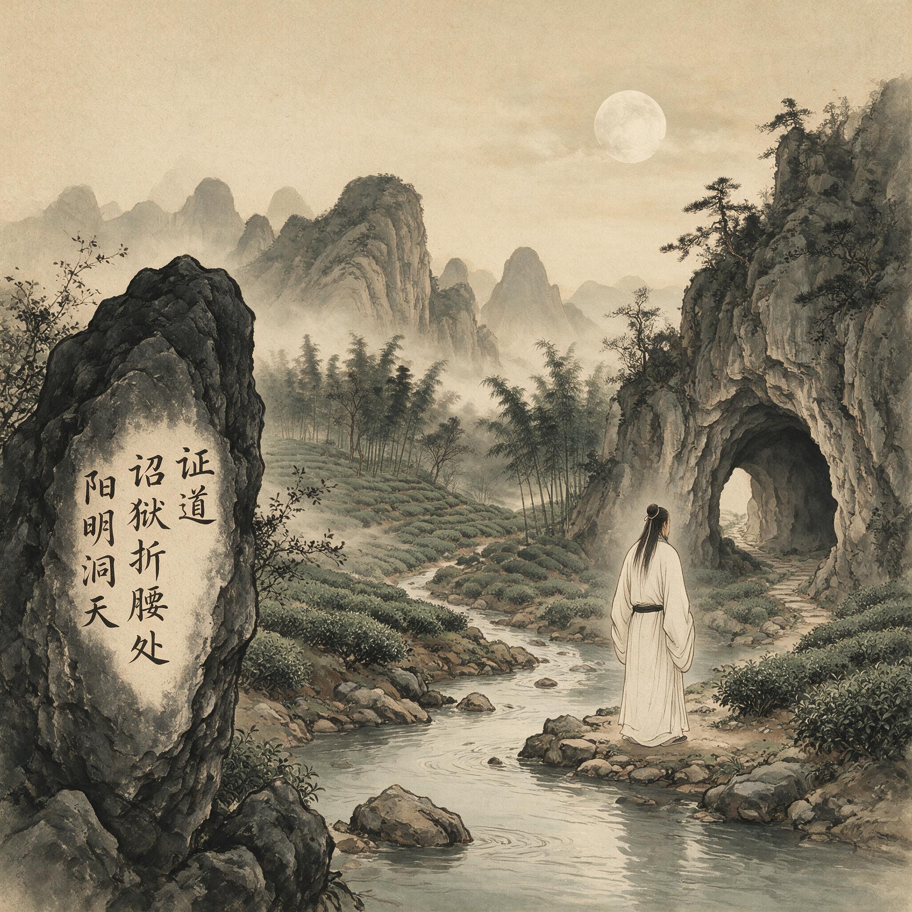

第 5 章
诏狱折腰处
那封奏疏的开头，措辞极为小心。“臣闻君仁则臣直。”这是《乞宥言官去权奸以章圣德疏》的第一句话。
它不是直接陈述事实，而是先确立一个道德前提——这句话从《论语》化出，原意是君主仁德，臣下才敢于直言。王守仁在正德元年（1506）冬天的北京写下这句话时，他把整封奏疏的政治逻辑预先压缩进了这七个字里：他要说的不是皇帝错了，而是皇帝本来就是仁德的，所以言官才敢说话；如果皇帝惩罚了言官，那也不是皇帝的错，而是有人蒙蔽了皇帝的圣德。这个修辞策略把批评的锋芒从皇帝身上完全移开，所有火力都绕了一个弯，指向皇帝周围的人——但又不能明说。全文不过数百字。

浙江绍兴会稽山阳明洞天景观
AI 生成插图，非史实影像。
承认戴铣等人“狂愚冒渎”，措辞过当，应该受到惩处——这是退一步。接着话锋转过来：但言官的职责就是说话，如果因为说话而获罪，天下人就会觉得皇上容不得不同意见——这是进一步。再退：其实皇上是圣明的，只是被小人蒙蔽了——这是退两步。最后再进：如果能宽宥言官、罢黜权奸，圣德就更加彰显——这是一步到位。
进退之间，每一个字都经过精心推敲，语气恭顺到近乎卑微，措辞迂回到几乎看不出锋芒。他在奏疏中没有把“权奸”二字和任何具体人名挂钩，但整个北京城都知道这两个字指向谁。刘瑾不需要看措辞。刘瑾只需要看立场。
正德元年十月，南京户科给事中戴铣、十三道御史薄彦徽等二十一人联名上疏，弹劾刘瑾等“八虎”乱政，请求武宗将其诛逐。武宗大怒，命锦衣卫将戴铣等逮至北京，廷杖之后关进锦衣卫狱。消息传至北京官场时，最先降临的不是愤怒，而是寂静。
内阁大学士刘健、谢迁、李东阳已经在此前数月因同一件事集体请辞，结果刘健和谢迁被迫致仕，李东阳被留下但已无力回天。六部尚书侍郎中凡有异议者，或贬或罢，无一幸免。正德朝第一次大规模清洗言路的行动已经完成了它的震慑效果：没有人敢再说话。
王守仁那一年三十五岁，官居兵部武选清吏司主事，正六品。在京城官僚体系中，这是一个不起眼的中层文官职位。他和戴铣素不相识。他没有任何上疏的义务。
北京六部的同僚们都在沉默，比他官阶高、资历深、关系广的人都没有站出来。按照官场逻辑，他完全可以不说话。他刚从绍兴阳明洞回到京城不久，此前告病归越两年，在洞中修炼导引术，差点走上佛老出离之路，最终因为割舍不下祖母和父亲才回到人世间。他复职只是按部就班地重新踏入仕途，没有任何迹象表明他准备在这个节点做出惊人之举。
但他写了那封奏疏。这个决定的驱动逻辑，只能从他此前的人生节点中寻找线索。弘治十五年，王守仁在阳明洞中静坐习导引，曾出现能预知来客的异象。他当时完全可以沿着这条路径继续走下去，把这个能力修炼得更深、更精纯，成为一代方术之士——道教传统中那条“长生久视”的道路在他面前展开过，部分风景秀丽的地方由于适合修炼而被誉为“洞天福地”，阳明洞正是这样一处所在。但他没有走那条路。他意识到这种神通不过是“簸弄精神”，并非圣贤之道，于是决定离开洞中。
这是一个关键的取舍时刻：他选择了儒家，拒绝了佛老；选择了入世，拒绝了出离；
选择了人伦日用中的责任，拒绝了山林方外的超越。但“入世”不是一个抽象概念。入世意味着进入政治实境，意味着在君臣父子夫妇朋友这些真实关系中持守道义，意味着当言路被堵塞、言官被逮捕、公义被践踏时，不能继续保持沉默。如果他在阳明洞中的决定是真实的——如果他不是用一套漂亮话来自我安慰——那么当正德元年冬天的政治风暴席卷北京时，他必须说话。不是因为说话能改变结果，而是因为不说话就等于否认了自己此前确认的一切。这是他上疏的内在逻辑。
但这个逻辑撞上了刘瑾的权力机器，后果是身体性的。奏疏递上去的第二天，武宗命锦衣卫将王守仁逮至午门，廷杖四十，下锦衣卫狱。
廷杖是明代政治暴力最赤裸的形式。受刑者被剥去官服，面朝下绑在午门前的砖地上，由锦衣卫校尉轮番杖击。行刑过程有太监监刑，有百官围观。棍棒落在人身上的声音，在午门城楼之间回荡。一杖下去皮开肉绽，十杖下去血肉模糊，四十杖打完，能活下来的人不多。
即便活下来，背部和臀部的伤口在潮湿的牢房里往往会感染化脓，在缺乏医药的条件下，死于伤口感染的概率极高。明代史料记载了大量廷杖致死的案例，正德年间尤其频繁。刘瑾擅权之后，廷杖从一种偶发的惩戒手段变为常规性的政治镇压工具，杖数从二十、三十加到四十、五十，甚至八十、一百，行刑方式也从“着实打”变成“用心打”——前者还留有余地，后者则必欲置之死地。
王守仁挨的那四十杖属于哪一种，史料没有明确记载。但他在狱中留下的诗篇反复写到伤口疼痛、彻夜难眠，可以推断伤势极为严重。那几首诗后来收入《王文成公全书》，诗题分别为《不寐》《读易》等，是他在极端处境中身心状态的最直接记录。
《不寐》写的是夜晚：牢房里没有窗户，不见天日，潮湿阴暗；伤口在草席上化脓，骨头在每一次翻身时刺痛；狱卒的脚步声在走廊里忽远忽近，每一次响动都让人不知道带来的是食物还是新一轮审讯。诗中的“不寐”不是文人失眠时的闲愁。
它是在疼痛和高烧的夹击下，意识在清醒与幻觉之间反复摇摆，每一刻都被拉长到接近断裂的边缘。“知夜永”这三个字在这首诗里不是修辞——它是一个身体被暴力摧毁之后，对时间流逝的精确感知：每一刻都像一辈子那么长。
锦衣卫狱，俗称诏狱，与刑部大牢不同。刑部大牢关押普通刑事犯，至少在形式上受《大明律》约束，有一套相对固定的司法程序。锦衣卫狱则完全不受司法程序制约。它直接听命于皇帝和司礼监太监，可以不经审讯无限期关押任何人。关进来的人不需要罪名，放出去的人不需要理由。从尚书侍郎到御史给事，从平民商贩到僧道方士，任何进入诏狱的人，其生命、身体、尊严都不再受任何规则保护。
它的存在本身就是明代皇权不受制约的物质象征：在午门和东厂胡同之间，有一块法律无法穿透的空间，这是权力结构中最坚硬的内核——它不对任何人负责，不向任何规则低头，不在任何文本上留下可被追溯的痕迹。王守仁进入诏狱时，距离他离开阳明洞不过数月。
这两处空间构成了一个严酷的对照：一边是山间石洞的清幽寂静，可以静坐调息、读书论道；一边是地下牢房的阴湿黑暗，只有高烧、化脓和漫长的等待。在阳明洞里，他可以控制自己的身体和意识，可以通过调节呼吸达到某种自如状态；在诏狱里，他的身体完全处于暴力支配之下，疼痛不由他控制，生死不由他决定，连最基本的睡眠和进食都取决于狱卒的意愿。这种对照不仅是环境变化，也是一种思想的压力测试：他在阳明洞里确认的那些道理——圣贤之学在人伦日用中完成、修身不必离世间、责任必须用行动承担——在诏狱的极端处境中还能不能成立？
这个问题没有以自觉反思的形式出现在他当时的诗文里。但从他在狱中所作诗篇的内容来看，它已经在暗中逼迫他了。
《读易》一诗提供了关键线索。能在诏狱中读到《周易》，这件事本身就不寻常。犯人被关进锦衣卫狱时，随身物品通常会被没收，能带进牢房的书极少。王守仁能得到这部书，可能是家人通过关系送进来的，也可能是狱中某个相对宽松的时段允许的。
无论通过什么途径，在廷杖伤口还在化脓、夜晚疼痛无法入睡的情况下，他选择把注意力集中在一部需要高度智力投入的经典上，这个行为本身已经说明了一种态度：他在用思想对抗暴力，在身体被摧毁的情况下试图保住精神的自主性。
《读易》诗中写的是囚居中的自我检讨。这种“省愆”在儒家传统中有源远流长的谱系，可以追溯到曾子所说的“吾日三省吾身”——在日常生活中不断检查自己的言行是否符合道德标准。但王守仁在诏狱里要反省的是什么？他上疏救言官、触怒刘瑾，从儒家道德标准来看不但没有过错，反而是尽忠职守的表现。他被关进诏狱不是因为做错了什么，而是因为做对了什么。
在这种情况下“省愆”，不是检查自己哪里犯了错，而是面对一个更尖锐的问题：如果坚持道义的结果是遭受暴力惩罚，那么道义本身还值不值得坚持？如果圣贤之学的实践必然带来身体痛苦和政治挫败，那么这种学问的意义何在？他在诗中并没有直接回答这个问题。
他只是写自己读《周易》，写自己在囚居中反省，写自己在夜晚的疼痛中等待天明。但这些诗句本身就构成了回答：他没有崩溃，没有后悔，没有放弃自己此前确认的那些道理。他在极端处境中选择读书、反省、等待，而不是诅咒、绝望、放弃，这个选择本身就是在实践从阳明洞带出来的那个信念——圣贤之学必须持守，不能因为处境恶劣就逃离。
在阳明洞里，他拒绝的是以离世方式解决身心问题的诱惑；在诏狱里，他拒绝的是以放弃道义换取安全的诱惑。两次拒绝的逻辑是同构的：真正的修身不是在顺境中坐而论道，而是在逆境中仍然能够持守自己确认的东西。
但这个故事还有另一半。王守仁在诏狱中读《周易》，不仅仅是在持守道德立场，也是在为自己当下的处境寻找解释框架。《周易》是一部关于变化的书，核心思想是宇宙万物处于永恒变化之中，人的处境有顺有逆、有吉有凶，君子应该根据时势变化调整自己的行为方式，在逆境中韬光养晦、等待时机。
对于正被关在诏狱里、生死未卜的王守仁来说，《周易》提供的不是道德判断——道德判断他早已经有了——而是一种理解苦难的方式：当前的困境不是道义的失败，而是时势运行的一个阶段；在这个阶段里最重要的是保存自己、观察变化、等待转机。
这种理解方式后来成为阳明心学的一个重要维度。王守仁晚年教导弟子时反复强调“事上磨练”，强调真正的良知不是静坐中体验到的那个清净本体，而是在具体事务中、在艰难处境中仍然能够发挥作用的那种判断力和行动力。这个思想的源头可以追溯到诏狱中的读易经验：当身体被暴力摧毁、当知识在权力面前完全失效、当道德立场带来的不是荣誉而是羞辱和疼痛时，人还能依靠什么来支撑自己？王守仁在诏狱中找到的答案是：依靠对变化的理解和对时机的判断。这不是书本上的知识，而是在极端处境中用身体经验验证过的生存智慧。
诏狱中还有一个经验维度同样值得注意：他与同囚的交往。王守仁在狱中所作诗篇中有多首与同囚唱和的作品。
这些囚友的身份大多不可考，但从诗中内容推断，应该也是因政治原因被关进来的文臣或士人。在不见天日的牢房里，这些“同舍郎”的存在构成了一种精神共同体。他们清谈的内容不外乎读书心得、时事议论、相互勉励。这些清谈在诏狱的权力结构中毫无意义——它不能减轻廷杖的疼痛，不能缩短关押的期限，不能改变任何人的政治命运。但在另一个层面上它至关重要：它让被关押者知道自己不是孤立的，知道自己坚持的东西还有人共同持守，知道在午门和东厂之外还有某种精神联系没有被暴力切断。
这种狱中共同体的经验后来进入了阳明心学的社会维度。王守仁晚年讲学非常重视师友之间的相互砥砺。他在《传习录》中多次谈到，修身不是一个人的事，必须在师友之间相互印证、相互纠正、相互扶持。
这种对共同体的重视固然有多方面来源——儒家的“朋友”一伦本来就很重要，明代中后期的讲学风气也在兴起——但诏狱中的那段经历很可能是一个身体记忆层面的根源：当一个人在最孤立无援的处境中发现“同舍郎”的存在可以支撑自己活下去时，他对人与人之间精神联系的理解就不再是抽象的了。
正德元年冬天的诏狱之祸持续了多久，确切时间史载不详。从王守仁被逮下狱到次年春天贬谪龙场驿丞的诏命下达，中间大约有两三个月。这两三个月里，他在伤口化脓、高烧不退、夜不能寐的状态中读《周易》、与囚友唱和、等待朝廷的处置决定。他不知道等待自己的是处死、流放还是罢官为民。
刘瑾对反对者的处置没有固定模式：戴铣被廷杖后伤势过重死于狱中；薄彦徽被贬为平民；还有一些人被发配到辽东或云南的边远卫所充军。王守仁的最终处置是贬为贵州龙场驿丞——从九品，驻地在贵州西北部的崇山峻岭之中，距离京城万里之遥。
这个处置不算最重，毕竟保住了性命，但也绝对算不上轻：龙场是当时公认的烟瘴之地，汉族官员被派往那里任职往往有去无回。诏命下达的那一刻，王守仁的反应没有直接史料记载。
但从他后来赴谪途中所作诗篇来看，他的心态既不是悲愤绝望也不是慷慨激昂，而是一种经过极端处境淬炼之后的冷静。《赴谪诗》系列中有一首，诗题是写给友人的答诗。其中有两句写到他对自己处境的判断：圣贤之学已经荒废很久了，自己不知道该往哪里去。这两句值得仔细辨析。
前一句是对时代状况的判断——朝廷上下没有人真正关心道义，所有人都只是权力格局中的利益计算者。后一句则是一个真实的疑问：在这样的时代里，一个失去了体制位置的人，该往哪里去？这个问题在入狱之前是不存在的。入狱之前，王守仁是一个按部就班的六品主事，在京城官僚体系中有一个明确的位置，知道自己每天该去哪里、该做什么。现在他被剥夺了那个位置，被扔出了京城权力中心，被发配到一个地图上都找不到的小驿站。他失去了体制内的所有坐标。
“吾将安所适”——这个发问不是修辞性的感慨，而是一个失去了方向的人发出的真实疑问。但这个问题本身已经包含了某种转机。他在问“该往哪里去”的时候，已经假定了自己还要继续往前走，而不是停在原地怨恨或放弃。
被廷杖、被下狱、被贬谪这一连串打击，没有摧毁他继续行动的能力。从阳明洞到诏狱再到赴谪途中，王守仁身上出现了一种特殊的韧性：每一次打击都把他推到崩溃边缘，但他每次都没有真的崩溃，而是在边缘处找到了继续走下去的理由和方式。这种韧性后来成为心学气质的一个重要组成部分——弟子们回忆王守仁时反复提到他处困不惊、遇变不乱，在任何困境中都能保持内心的平稳和判断的清醒——但它的形成不是在书斋里读书思考的结果，而是在诏狱的黑暗中被疼痛、恐惧和绝望反复捶打之后锻铸出来的。这里需要正面回应的一个学术问题，涉及如何理解阳明心学的性质。
有一种解释传统认为，阳明心学本质上是孟子心性论和陆九渊本心说的系统化哲学重构，王守仁的生平事件只是思想发生的偶然触发因素，学说的内核具有超越具体情境的先验一致性。按照这种解释，诏狱之祸只是“圣贤之学”的试炼场——王守仁在试炼中证明了自己持守道义的决心，但他的思想结构并没有因为试炼而发生实质性变化。这种解释的问题在于，它把“思想”限定为可以写成命题和论证的东西，而忽略了思想发生的身体条件和处境条件。
王守仁在诏狱中经历的不是一个哲学问题——不是“人在逆境中应该如何持守道义”这样的抽象命题——而是一个生存问题：他的背在化脓，他的腿在发抖，他的嘴里有血腥味，他的眼前出现鬼影，他不知道明天会不会被拉出去再打一顿或者直接处死。在这种处境中，“持守道义”不是一个可以通过逻辑推理得出的结论，而是一个必须在每一刻用身体去承受的选择。这个选择的过程会改变人对“道义”本身的理解：入狱之前，道义可能是一个可以谈论、可以书写、可以在静坐中体认的东西；
入狱之后，道义变成了一个必须在疼痛中抓住的东西，一个一旦松手就会被恐惧吞没的东西，一个不再是思维对象而是生存条件的东西。这种改变不是思想内容的改变——王守仁入狱前后对儒家基本价值的认同并没有变化——而是思想质地的改变。
同样一个命题，“圣贤之学必须在人伦日用中完成”，在阳明洞里说出来和在诏狱里说出来，分量完全不同。在阳明洞里，这句话是对佛老出离倾向的拒绝，是一种理论选择，它的对立面是离世修道。在诏狱里，这句话是对暴力压迫的回应，是一种生存决断，它的对立面是放弃道义以保命。
同一个命题在不同处境中获得了不同的否定对象，其内涵在这个过程中被深化、被锻铸、被赋予了身体经验的重量。这就是绝境锻铸的开始。本书使用这个概念来描述王守仁思想形成的一个核心机制：他的关键思想不是在平静的哲学反思中产生的，而是在生命绝境——死亡威胁、政治挫败、道德困境——中被逼迫出来的；
廷杖留下的不仅是背部和臀部的疤痕。锦衣卫狱潮湿阴暗的环境，使得伤口愈合的过程变得极其缓慢。出狱时，他的双腿已经无法正常行走。从午门到锦衣卫狱那一小段路，来的时候是被拖进去的，出去的时候是被搀出去的。
正德二年春天贬谪诏命下达时，他的身体远未恢复。按照明代驿递制度，被贬官员必须在规定期限内到达贬所，逾期不到要受更重的惩处。这意味着他必须拖着尚未愈合的伤口，在春寒料峭中踏上四千余里的驿路。每一段路程都是一次重新撕裂伤口的过程。
轿子颠簸时，背上的伤疤与轿厢反复摩擦；骑马时，双腿无法夹紧马腹，只能任由牲口在驿道上忽快忽慢地行走。他在赴谪途中写给友人的信里很少抱怨身体上的痛苦，但行程本身暴露了一切：从北京到龙场，正常驿程不超过六十天，他走了将近三个月。
刘瑾的清洗没有因为他被贬谪而停止。正德二年正月，就在王守仁离开北京前后，刘瑾矫诏将刘健、谢迁、韩文等五十三人列为“奸党”，榜示朝堂，命百官跪于金水桥南听诏。名单上的人，或已致仕、或已被贬、或仍居官位，无一例外被剥夺了政治生命。这是明代历史上第一次以“奸党”的名义公开大规模清洗朝臣。
此前洪武年间也有胡惟庸案和蓝玉案，但那是以谋反罪清洗开国功臣，针对的是武将和勋贵集团。正德二年的“奸党榜”则是完全不同的性质：它针对的是文官系统中的言路力量，清洗的手段不是杀头灭族，而是政治羞辱和仕途终结。榜上的五十三人，大多数没有被打入诏狱，也没有被施以廷杖，他们只是被赶出朝廷，被剥夺了一切在体制内发言的资格。
但恰恰是这种“从轻发落”，比杀戮更有效地摧毁了士大夫群体的抵抗意志——杀戮会激起义愤，而羞辱和放逐则制造了恐惧和沉默。
王守仁没有出现在“奸党榜”上。这不是刘瑾对他网开一面，而是因为他已经被单独处置过了。从权力技术的角度看，王守仁的案例与“奸党榜”构成了正德朝政治清洗的两条平行线索：对于核心高官和言路领袖，刘瑾用的是集体羞辱的手段，通过公开榜示摧毁其社会声望和政治地位；对于中下层官员中胆敢单独发声的人，刘瑾用的是个体毁灭的手段——廷杖、下狱、贬谪边远——用身体暴力消灭其行动能力。
两条线索共同传递了一个明确的信息：无论你处在官僚体系的哪个层级，无论你选择集体抗争还是单独发声，无论你措辞恭顺还是直截了当，只要你的立场与权奸对立，你就必须在羞辱和暴力之间选择一种方式接受惩罚。没有中间道路。没有安全区域。
这个信息传递的后果，不是王守仁一个人的灾难，而是整个士大夫群体的精神溃败。正德元年冬天的朝廷里，有资格上疏的官员数以百计，其中不乏资历更深、职位更高、与戴铣私交更密的人。
他们全部选择了沉默。这种沉默不能简单解释为胆怯或自私。它背后的逻辑是：当权力结构已经不再按照成文规则运行时，任何试图按照规则进行抵抗的行为不仅无效，而且愚蠢。刘瑾的“八虎”集团控制着司礼监和东厂，进而控制着锦衣卫和诏狱，这意味着他们可以绕过《大明律》、绕过内阁票拟、绕过六科封驳，直接对任何人实施逮捕、审讯、刑罚和流放。
面对这样一个不受任何制度约束的权力集团，士大夫手中唯一的武器就是奏疏——而奏疏是刘瑾每天在司礼监批红时随手就能拦下的东西。戴铣的那封联名奏疏根本没有送到武宗面前，就被司礼监扣下了。刘瑾是在看到奏疏之后，才回过头来向武宗请示如何处置——而武宗对政务毫无兴趣，一切听由刘瑾决断。
王守仁对此并非不知情。他在兵部任职三年，对朝廷的权力运作机制有清晰的了解。他知道自己的奏疏很可能根本到不了皇帝手中。他知道刘瑾不会因为一封措辞恭顺的奏疏就改变对言路的态度。
每一次绝境都迫使他放弃一部分既有的知识框架，用身体经验作为熔炉重新锻造对儒家基本命题的理解。诏狱之祸是这个机制的第一次启动：廷杖摧毁了他对身体安全的预设，诏狱摧毁了他对制度正义的信任，贬谪摧毁了他对仕途前景的期待。
三重建制同时崩塌，把他逼到一个前所未有的位置——他必须从零开始重新回答圣贤之学究竟是什么，因为他此前对这个问题的所有回答，都是在一个相对安全、相对稳定、相对可预期的生活框架中做出的。正德元年冬天到正德二年春天，王守仁走在通往贵州的驿路上。从北京到龙场的驿路是固定的：出京西行，经保定、真定入山西，再经河南、湖广进入贵州山区，全程四千余里，步行需要两三个月。
他带着廷杖留下的伤疤，带着狱中读易时记下的心得，带着那部在黑暗中反复翻阅的《周易》，走向一个从未见过的地方。赴谪途中经过湖广沅江时，他写了一首诗，诗题叫《沅水驿》。诗的最后两句把自己即将进入的西南边疆称为万里投荒，把这个被迫的旅程称为壮游。
这种自我说服的方式后来成为心学实践的一个重要特征——在绝望的边缘强行给自己找到一个继续走下去的理由，把政治惩罚重新定义为人生历练，把被迫前往的烟瘴之地重新想象为主动选择的游历之地。这不是自我欺骗。他非常清楚龙场是什么地方，非常清楚自己面临的真实危险。
但正是因为他清楚，这种重新定义才不是轻飘飘的豁达，而是一种在重压之下仍然保持主动性的努力。那个地方叫龙场。他还没有到达那里。他不知道自己将在那里经历什么，不知道自己的思想将在那里发生怎样的变化。他只知道一件事：诏狱的门已经在他身后关上，午门的血迹已经干了，他已经被推上了一条无法回头的路。那个在阳明洞里犹豫要不要离开洞穴的人，如今已经没有了任何洞可以退回去。他只能往前走。